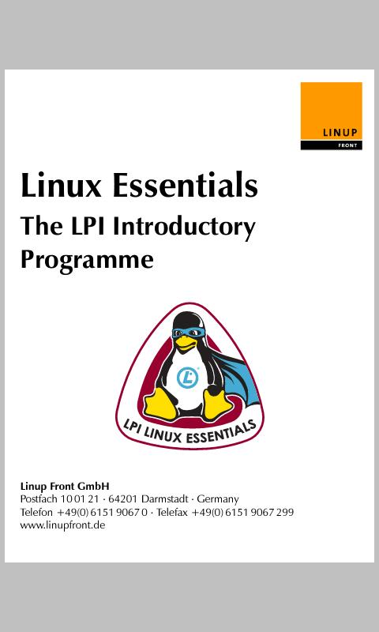

Table of Contents
- Anyone who wants to be a System Administrator,
- Junior System Administrators who want to make sure their foundation is solid for advancement to more senior levels,
- Intermediate/Advanced/Senior System Administrators advancing to more senior levels,
- Trainers and Educators
This is a guide to the professional literature of the field of System Administration.
This document does not include practice exercises. However, practical experience is essential to success in the field. The student is encouraged to practice.
Thanks for help in compiling this list to Jonah Sinowitz, Eric Sorenson, Mark Burgess, Shahab Shawn Sheikhzadeh, Willard Dennis, Kyrre Begnum, david t. klein, Avleen Vig.
Comments welcome! Email the editors at feedback@sabok.org or join us in the Ops-Education Google Group.
The materials should be studied and practiced in sequence.
Core contains essential reading - the fundamentals of the field.
Normative literature attempts an overview of normative literature - publications that lay out the norms of the field, or what is generally agreed upon (i.e. best practices). Norms and standards are essential for professionalization.
You can add to your Core Knowledge with selections from the Supplemental list as needed.
Advance your knowledge further by study from the Advanced list.
| Burgess, Mark. Principles of Network and System Administration. Hoboken, NJ: Wiley, 2004. Print. This is a college text. |
| Limoncelli, Thomas A., Christine Hogan, and Strata R. Chalup. The Practice of System and Network Administration, 2nd ed. Harlow: Addison-Wesley, 2007. Print. A comprehensive overview of the practice of system administration. Written by system administrators for system administrators. |


| Smith, Roderick W. Linux Essentials Indianapolis, IN: Wiley, 2012. Print. An introduction to Linux and Open Source. http://www.lpimarketplace.com/ProductDetails.asp?ProductCode=978-1-118-10679-2 |
 | Elsner, Tobias et al. Linux Essentials: The LPI Introductory Programme Darmstadt, Germany: Linup Front, 2012. An alternative introduction to Linux and Open Source. Courseware for LPI Linux Essentials program. Free for non-commercial use. |
| Shotts, William. The Linux Command Line: A Complete Introduction First Edition. San Francisco: No Starch, 2012. Print. http://sourceforge.net/projects/linuxcommand/files/TLCL/13.07/TLCL-13.07.pdf/download Shotts, William. The Linux Command Line: A Complete Introduction Second Edition, 2013. http://linuxcommand.org A complete introduction to the Linux Command Line. We have started to recommend this book instead of the dated "The UNIX Programming Environment". Available in PDF and dead tree versions. |


| Nemeth, Evi et al. Unix and Linux System Administration Handbook, 4th ed. Upper Saddle River, NJ: Prentice Hall, 2012. Print. "This is a comprehensive guide to the care and feeding of UNIX and Linux systems. The authors present the facts along with seasoned advice and real-world examples." — Pat Parseghian |
| Frisch, Æleen. Essential System Administration, 3rd ed. Beijing: O’Reilly, 2002. Print. |


Soft skills are increasingly recognized as essential to success in system administration.
- Hard skills
- Working with technology.
- Soft skills
Working with people. This includes communication, project management, time management, persuasion, leadership, cooperation, business alignment, learning how to learn (and teach), etc.
- Time Management for System Administrators by Tom Limoncelli
- http://www.opsschool.org/en/latest/soft_skills_101.html
Literature describing norms or standards in the field of (Unix/Linux) system administration:
- "The Limoncelli Test: 32 Questions for Your Sysadmin Team" (29 July 2011) Tom Limoncelli http://everythingsysadmin.com/the-test.html
- RFC 1178 "Choosing a Name for Your Computer" http://www.faqs.org/rfcs/rfc1178.html
- Short Topics in System Administration https://www.usenix.org/lisa/books
- SA-BOK by Geoff Halprin (1997) http://www.sysadmin.com.au/sa-bok.html http://www.sysadmin.com.au/sa-bok/sa-bok-0500.pdf http://www.sysadmin.com.au/sa-bok/disciplines.pdf
- "On Designing and Deploying Internet-Scale Services" James Hamilton http://www.usenix.org/event/lisa07/tech/full_papers/hamilton/hamilton_html/
| Robbins, Arnold, Elbert Hannah, Linda Lamb, and Linda Lamb. Learning the vi and Vim Editors: Text processing at maximum speed and power, 7th ed. Sebastopol, CA: O’Reilly Media, 2008. Print. http://shop.oreilly.com/product/9780596529833.do vi is a standard UNIX text editor, and vim is it’s modern incarnation. |
| Kernighan, Brian W., and Rob Pike. The UNIX Programming Environment. Englewood Cliffs, NJ: Prentice-Hall, 1984. Print. http://www.amazon.com/Unix-Programming-Environment-Prentice-Hall-Software/dp/013937681X Chapters 1 - 6 introduce a new user to UNIX. If you want to make sure your fundamentals are fully in, go back to the source, the origin of UNIX. |
Learning Perl | |
DNS and Bind | |
Automating System Administration with Perl | |
Learning CFEngine 3 | |
Backup and Recovery | |
PostgreSQL: Up and Running | |
High Performance MySQL | |
PostgresSQL 9.0 High Performance | |
Sendmail | |
The Smallest Sendmail Book |


- "An Introduction to the Unix Shell" by S. Bourne, author of the Bourne shell (sh) http://steve-parker.org/sh/bourne.shtml
- Steve Parker’s shell scripting tutorial http://steve-parker.org/sh/sh.shtml
- Unix Programming Environment http://www.amazon.com/Unix-Programming-Environment-Prentice-Hall-Software/dp/013937681X
- Linux for Dummies http://www.dummies.com/store/Computers-Internet/Operating-Systems/Linux.html
- Linux Pocket Guide http://oreilly.com/catalog/9780596006280/
- Learning the bash Shell http://oreilly.com/catalog/9780596009656/
- Linux in a Nutshell (2009 edition) http://oreilly.com/catalog/9780596154486/
- "Computer Immunology" paper by Mark Burgess
- "Handbook of Network and System Administration", Edited by Jan Bergstra and Mark Burgess. November 2007.
- In Search of Certainty by Mark Burgess (2013)
- "Analytical Network and System Administration" by Mark Burgess. This is a super advanced text. Exercises for "Analytical Network and System Administration"
- Effective Monitoring and Alerting for Operations
- Scalable internet architectures by Theo Schlossnagle
-
 Web Operations: Keeping the Data On Time
John Allspaw, Jesse Robbins
http://shop.oreilly.com/product/0636920000136.do
Web Operations: Keeping the Data On Time
John Allspaw, Jesse Robbins
http://shop.oreilly.com/product/0636920000136.do
- Moskowitz, Adam. (2010). The Path to Senior Sysadmin.
- Systems Performance: Enterprise and the Cloud by Brendan Gregg
- Brendan Gregg’s Recommended Reading list
- Kim, Gene, Kevin Behr, and George Spafford. The Phoenix Project: A Novel about IT, DevOps, and Helping Your Business Win. Portland, OR: IT Revolution, 2013. Print.
- "Computer Networking: A Top Down Approach" by Kurose and Ross
- "Visible Ops Handbook"
- "Visible Ops Security"
- "Errors of Observation and their Treatment" by Topping
- http://yourdon.com/strucanalysis/ "Just Enough Structured Analysis" by Ed Yourdon - a basic systems engineering text
- ?? Need something for troubleshooting ??